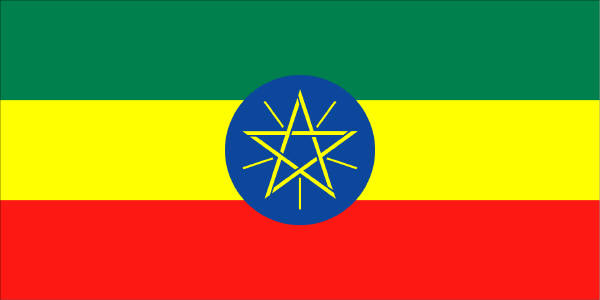
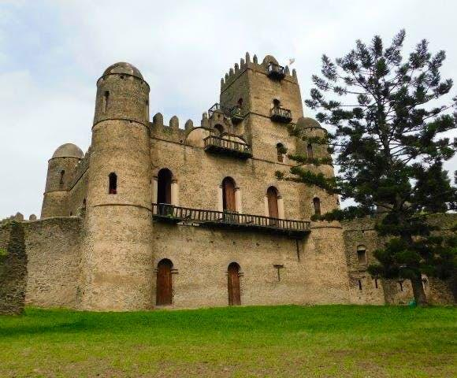
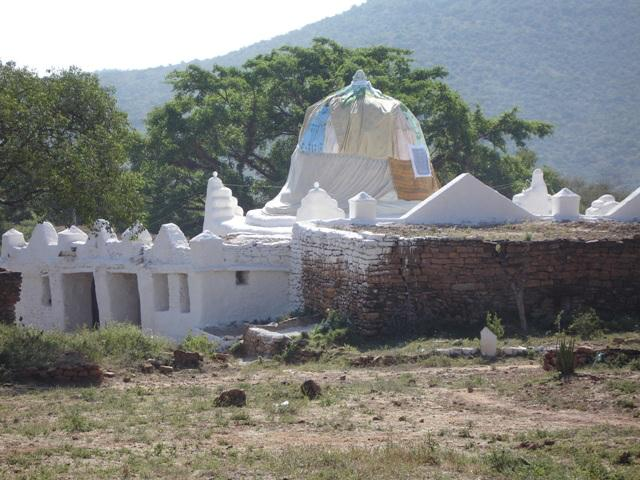
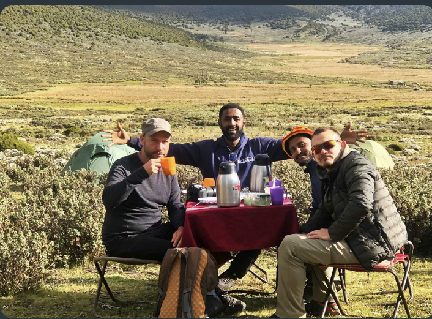

Never Stop
Exploring
Visit Ethiopia Offers Best Deal On Ethiopia Tour Packages.

Visit Ethiopia Offers Best Deal On Ethiopia Tour Packages.

Before being incorporated into the central Christian Empire of Ethiopia, Jimma was one and the strongest of the five autonomous Gibe kingdoms of the Oromo people under the leadership of Abba Jifar Abba Gomal, best known as king Abba Jifar also known by his Islamic name (Sultan Muhammad Dawud Ibn Ibrahim) of Jimma.

The ancient kingdom of Aksum was located in present-day Ethiopia. This wealthy African civilization celebrated its achievements with monuments like King Ezana's stela in Stelae Park, Ethiopia.

During unsettled periods between the thirteenth and seventeenth centuries, Ethiopian rulers moved their royal camps frequently. King Fasil (Fasiledes) settled in Gondar and established it as a permanent capital in 1636. After Fasil, successive kings continued building, improving the techniques and architectural style.

The Simien Mountains National Park in Northern Ethiopia is an exotic setting with unique wildlife and breath-taking views on a landscape shaped by nature and traditional agriculture. The natural beauties of this region have always filled visitors from Ethiopia and abroad with awe. Gentle highland ridges at altitudes above 3600 meters above sea level (m asl), covered with grasses, isolated trees (Erica &bored) and the bizarre Giant Lobelia (Lobelia rhynchopetalum) are found on the high plateau that ends abruptly at 1000- to 2000-m deep escarpments.

Before being incorporated into the central Christian Empire of Ethiopia, Jimma was one and the strongest of the five autonomous Gibe kingdoms of the Oromo people under the leadership of Abba Jifar Abba Gomal, best known as king Abba Jifar also known by his Islamic name (Sultan Muhammad Dawud Ibn Ibrahim) of Jimma.

Dirre Sheik Hussein (Shrine): It is situated on the border of West Harargé and Balé Zones at the Southern edge of Web River. It is 178 km far from Robé along the all weather road that passes through Jarra, and Dallo Sabro towns. The Shrine is named after an ancient muslim holy man (religious leader) called Sheikh Nur Husein bin Malka or bin Ibrahim who was reputed for his religious teachings, high devotion and remarkable miraculous deeds.

Itinerary Start in Addis Ababa and end in Harenna Forest! With the Hiking & Trekking tour 6 Days Bale Mountains Trekking Tour, you have a 6 days tour package taking you through Addis Ababa, Ethiopia and 4 other destinations in Ethiopia. 6 Days Bale Mountains Trekking Tour includes accommodation in a hotel as well as flights, an expert guide, meals, transport.

Itinerary Start and end in Addis Ababa! With the In-depth Cultural tour Cultural Trip to the Omo Valley Tribes of Ethiopia, you have a 7 days tour package taking you through Addis Ababa, Ethiopia and 6 other destinations in Ethiopia. Cultural Trip to the Omo Valley Tribes of Ethiopia includes accommodation, an expert guide, meals, transport and more.

Itinerary Start and end in Addis Ababa! With the In-depth Cultural tour 10 Days Ethiopia Northern Historic Tour, you have a 10 days tour package taking you through Addis Ababa, Ethiopia and 5 other destinations in Ethiopia. 10 Days Ethiopia Northern Historic Tour includes accommodation, flights, an expert guide, meals, transport and more.

Itinerary Start and end in Addis Ababa! With the In-depth Cultural tour 10 Days Ethiopia Northern Historic Tour, you have a 10 days tour package taking you through Addis Ababa, Ethiopia and 5 other destinations in Ethiopia. 10 Days Ethiopia Northern Historic Tour includes accommodation, flights, an expert guide, meals, transport and more.
Itinerary Start and end in Addis Ababa! With the In-depth Cultural tour Special Omo Valley Tour, you have a 6 days tour package taking you through Addis Ababa, Ethiopia and 5 other destinations in Ethiopia. Special Omo Valley Tour includes accommodation, flights, an expert guide, meals, transport and more.
Itinerary Start and end in Addis Ababa! With the In-depth Cultural tour 6 Days Bale Mountains Trekking Tour, you have a 6 days tour package taking you through Addis Ababa, Ethiopia and 5 other destinations in Ethiopia. 6 Days Bale Mountains Trekking Tour includes accommodation, flights, an expert guide, meals, transport and more.